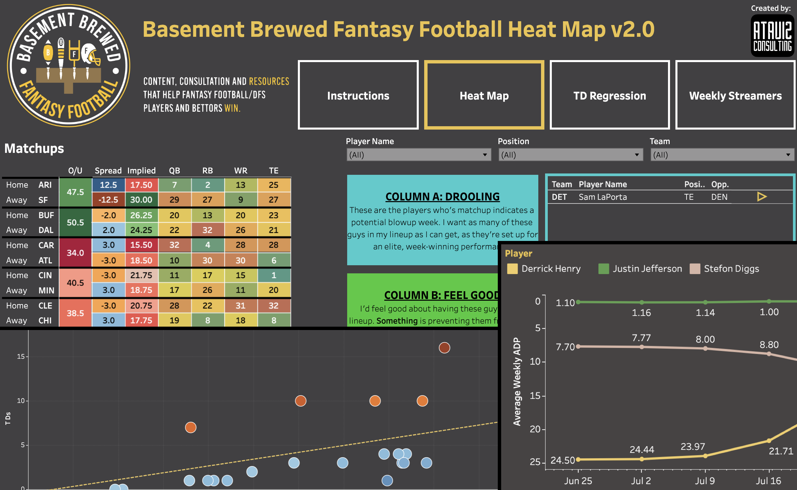

Innovating Public Safety Through Strategic Technology Leadership
Ataviz Consulting partnered with SmartProtect to build the operational and technology foundation behind a predictive analytics platform; establishing internal KPIs, aligning their tech initiatives with business goals, and building out a capable data science team. The result: actionable insights that improved operational efficiency and positioned SmartProtect as an innovation leader in public safety.
Maverick Systems: Transforming Real Estate Insights Through Cloud Strategy
Maverick Systems was sitting on fragmented, hard-to-use data that was slowing down decision-making. Ataviz Consulting streamlined their entire data infrastructure through a cloud migration and modernization initiative; enabling faster reporting, real-time insights, and sharper strategic decisions for the brokerages they serve.

Basement Brewed Fantasy Football: Turning Complexity Into Growth
Ataviz Consulting helped Basement Brewed cut through operational complexity and turn their data into a better product. By automating weekly workflows and building intuitive dashboards, we saved the team 20+ hours per week and helped drive a 44% year-over-year revenue boost.
Streamlining Operations for an ABA Treatment Provider
A mid-sized ABA treatment provider was bogged down by slow reporting and unreliable data. Ataviz Consulting overhauled their data pipeline and dashboards; cutting load times, reducing errors, and giving leadership the real-time visibility they needed to make faster, more confident decisions.
Understanding Policy Priorities for People Experiencing Homelessness in Skid Row, Los Angeles
Ataviz Consulting partnered with The A-Mark Foundation to turn complex survey data into clear, actionable findings. By making the data accessible and easy to interpret, we helped policymakers and community organizations better understand both the immediate needs and long-term priorities of people experiencing homelessness in Skid Row, and act on them.